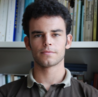

Hatvani István Gábor
PhD
Tudományos munkatárs

Elérhetőségek
- +36 1 309 2600 / 1353
- +36 1 319 3137
- hatvani.istvan at geochem.hu
- hatvaniig at gmail.com
- 313 szoba

Születési hely és idő
- Budapest, 1987
Képesítés és fokozat
- 2013 PhD ELTE TTK Környezettudományi Doktori Iskola - Környezeti-földtudomány Ph.D. program. A dolgozat címe: „Application of state-of-the-art geomathematical methods in water protection - on the example of the data series of the Kis-Balaton Water Protection System„
- 2010 MSc ELTE TTK Környezettudomány szak. A dolgozat címe: „Idősoros, egy- és többváltozós adatelemző módszerek alkalmazása a Kis-Balaton Vízvédelmi Rendszer idősoraira”
Nyelvtudás
- angol, felsőfok, 2002
- olasz, középfok, 2010
Fontosabb kutatási területek
- Paleoklíma-kutatás
- Vízminőség védelem
- Geostatisztika
- Sztochasztikus modellezés
Kutatási projektek
- Séd-Nádor-csatorna környezetvédelmi tényfeltárási munkálataihoz kapcsolódó terepi feladatok elvégézse a Wessling hungary Kft.-nél. 2009.06.12 – 2009.07.23
- Második CC-WaterS továbbképzés a Thessaloniki Egyetemen, Dél-Kelet Európai Régió számára. Téma: Klímaváltozás hatása az ivóvízbázisokra. 2011.04.11 – 2011.04.15
- A BAF I. Felszíni kutatási fázis módszertani értékelésének kidolgozása, alvállalkozói megbízás a Radioaktív Hulladékokat Kezelő Közhasznú Nonprofit Kft.-től. Téma: A korábbi BAF tanulmányok geomatematikai értékelése és javaslattétel a projekt jövőbeni lefutására. 2012
- TÁMOP 4.1.3-11/1-2011-0001 Felsőoktatási szolgáltatások rendszerszintű fejlesztése projekt, melynek keretében az ELTE TTK-n működő környezettudomány szakok felülvizsgálata a cél. 2013.03.03 – 2013.12.31
- 6th National Communication of Hungary to the UNFCCC (Magyarul: 6. Klímaváltozási országjelentés az ENSZ Éghajlatváltozási Keretegyezménye felé) 2013.
- Környezeti izotópok alkalmazása folyókban és tavakban (“Training Course on the Application of Environmental Isotopes in Rivers and Lakes”) c. továbbképzés elvégzése a Nemzetközi Atomenergia Ügynökségnél 2015.11.16-27, IAEA, Bécs, Ausztria
- Részvétel a DANUBIUS-RI pán-európai projekt előkészületi munkálataiban az IIC (Iternational Initiative Commitee) tagjaként, amely felvétel nyert az Európai Bizottság ESFRI (European Strategy Forum on Research Infrastructures) 2016-os Roadmap-jébe, ami által közelebb került, hogy Horizon 2020 projektként megvalósulhasson.
Szakmai közéleti tevékenység
- Magyarhoni Földtani Társulat 2009-
- Magyarhoni Földtani Társulat, Geomatematikai Szakosztály titkára 2015-
- Magyar Hidrológiai Társaság 2011-2015
- IAMG Student Chapter Szeged (Nemzetközi Geomatematikai Társulat Diák Szervezete) 2011-2014
- IAMG(Nemzetközi Geomatematikai Társulat) 2014-
- Magyar Mérnöki Kamara 2014- (01-15205)
- Magyar Tudományos Akadémia, X. Földtudományok Osztálya, Földtani Tudományos Bizottság, köztestületi tag 2014-
- Oktató az ELTE TTK Földtudományi- és Környezettudományi Doktori Iskoláiban 2017-
- Szerkesztő az Open Geosciences-nél (IF 0,726) 2012-
- Társszerkesztő a Central European Geology-nál 2015-
- Vendégszerkesztő az International Journal on Geomathematics-nél 2019-2020
Kutatási pályázatok, ösztöndíjak
- 2018. Fő erdőalkotó európai fafajok levélzetéből cellulóztartalom- és cellulóz-stabil izotóp adatbázis előállítása és statisztikai kiértékelése. Új Nemzeti Kíválóság Program Bolyai+ Kutatási Ösztöndíj; Emberi Erőforrások Minisztériuma (témavezető/egyedüli pályázás; 2018-2019)
- 2018. Konferenciarészvételi támogatás az Annual Conference of the International Association for Mathematical Geosciences (IAMG 2018) c. konferencián. Ifjúsági Nemzetközi Konferencia Pályázat; 580/5/2018/NKF; Magyar Tudományos Akadémia (témavezető; 2018)
- 2017. Regionalizált csapadék stabilizotóp adatok geostatisztikai vizsgálata. A Nemzet Fiatal Tehetségeiért Ösztöndíj; NTP-NTFÖ-17-B0028; Emberi Erőforrások Minisztériuma (témavezető; 2017-2018)
- 2017. Bilaterális Kutatási Ösztöndíj a Fertő tó hosszú-távú mikrobiális és fekális szennyezésének modellezésére; Osztrák-Magyar Tudományos és Oktatási Akcióprogram Alapítvány (97öu-1; témavezető; 2017-2018)
- 2016. Víz izotópok térbeli eloszlása európai csapadékban - különös tekintettel az Adria-Alföld páraáramlási útvonalra; SNN OTKA 118205; NKFIH (résztvevő kutató; 2016-2019)
- 2016. Hidrológiai és paleoklíma idősorok elemzése geomatematikai módszerekkel. Bolyai János Kutatási Ösztöndíj; MTA (témavezető/egyedüli pályázás; 2016-2019)
- 2016. A Kárpát-Balkán régió hőmérséklet és hidroklíma érzékeny proxijainak vizsgálata az elmúlt 1000 évre. A Nemzet Fiatal Tehetségeiért Ösztöndíj; NTP-EFÖ-P15-0550; Emberi Erőforrások Minisztériuma (témavezető; 2016-2017)
- 2014. Háttérfolyamatok és kapcsolt rendszerek feltárása a hidrológiai ciklus regionális alrendszereiben egy-, többváltozós és idősoros geomatematikai módszerek alkalmazásával. Erdős Pál Fiatal Kutatói Ösztöndíj; TÁMOP-4.2.4-A/1-11/1-2012-0001 (kiváló záró minősítés) (témavezető/egyedüli pályázás)
- 2013. Kis-Balaton Vízvédelmi Rendszer (KBVR) adatsorainak vizsgálata, egy-, többváltozós és idősoros geomatematikai módszerekkel. Apáczai Csere János Doktoranduszi Ösztöndíj; TÁMOP-4.2.4-A/1-11/1-2012-0001 (kiváló záró minősítés) (témavezető/egyedüli pályázás; 2013-2014)
- 2012. A Fertőzug sekély felszín alatti vízrendszerének vizsgálata geostatisztikai és többváltozós adatelemző módszerekkel. Osztrák-Magyar Tudományos és Oktatási Akcióprogram Alapítvány Ernst Mach Ösztöndíja (témavezető/egyedüli pályázás; 2012-2013)
- 2009. Köztársasági ösztöndíj a 2009/2010-es tanévre; Oktatási és Kulturális Minisztérium
Elnyert díjak
- 2019. Kiváló CSFK Kutató; MTA CSFK
- 2018. Szádeczky-Kardoss Elemér Díj; MTA, Földtudományok Osztálya
- 2018. Kiváló CSFK Kutató; MTA CSFK
- 2018. Akadémiai Ifjúsági Díj; MTA
- 2017. Danubius Young Scientist Award; Austrian Federal Ministry for Science, Research and Economy, Institute for the Danube Region and Central Europe
- 2017. Kiváló CSFK Kutató; MTA CSFK
- 2016. Környezetvédelmi Tudományos Ifjúsági pályadíj; MTA
- 2015. Junior Príma Díj – Magyar Tudomány Kategória; Príma Primisszima Alapítvány & Magyar Fejlesztési Bank Zrt.
- 2011. Magyar Fejlesztési Bank Habilitas Ösztöndíja
- 2010. Dr. Pauka Imre Tanulmányi Díj; Golder Zrt. tudományos tevékenységet elismerő díja.
- 2010. Természettudományi Kar kiváló hallgatója (dékáni kitüntetés)
- 2008. Természettudományi Kar kiváló hallgatója (dékáni kitüntetés)
Tudományos versenyeken elért helyezések
- Fiatal előadó kategória, első helyezés. Determining Anthropogenic Effects Using Principal Component Analysis on a fluvial (E Hungary) and Two Lake Ecosystems (W Hungary, E Austria). CMA4CH, Mediterraneum Meeting, Rome 2012
- TXM Olaj- és Gázkutató Kft. különdíja. Principal Component Analysis (PCA) on data series of Hídvégi Pond (W Hungary). Ifjú Szakemberek Ankétja, Mátrafüred 2010.
- Gyakorlati kategória első dij és Magyarhoni Földtani Társulat Geomatematikai szakosztályának különdíja. Többváltozós és idősoros módszerek alkalmazása a Kis-Balaton Vízvédelmi Rendszer Adatsoraira. Ifjú Szakemberek Ankétja, Keszthely 2009.
- Zsűri kiemelt dicsérete. A Kis-Balaton Vízvédelmi Rendszer hosszútávú adatsorainak elemzése; OTDK, Hidrolgeológia-Hidrológia tagozat, Szombathely 2009.
Oktatási tevékenység
- 2019-2022 Környezettudomány nemzetközi mesterszak államvizsga bizottsági tag 2017. – Data analysis in environmental sciences – Ph.D. föld- és környezettan szakos hallgatók részére
- 2015- Advanced environmental calculations – M.Sc. környezettan szakos hallgatók részére
- 2015- Geomathematics – M.Sc. földtudomány és környezettan szakos hallgatók részére
- 2015- A mintavételezéstől az adatig – M.Sc. környezettan szakos hallgatók részére
- 2010- Bevezetés a térinformatikába – B.Sc. föltudomány szakos hallgatók részére
- 2014- Környezettudományi számítások – B.Sc. környezettudomány szakos hallgatók részére
- Témavezetői, konzulensi tevékenység (pdf)
Publikációk


Utolsó frissítés 2021.05.05.